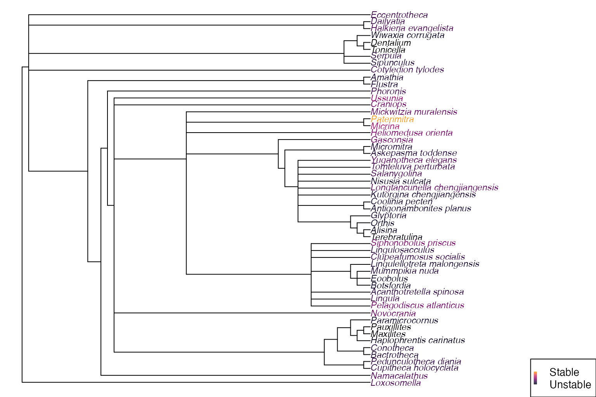
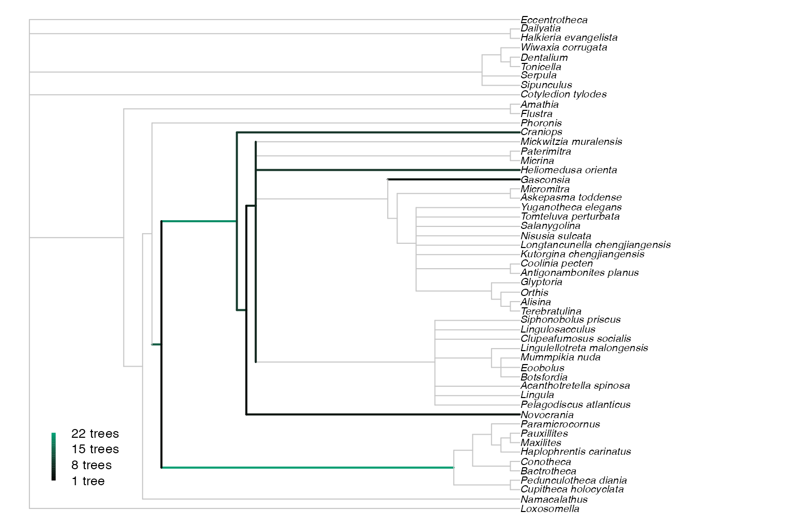

Detecting rogue taxa in Bayesian posterior tree sets
 Martin R. Smith, Durham University
Martin R. Smith, Durham University
2023-01-16
Source:vignettes/Bayesian.Rmd
Bayesian.RmdDetecting “rogue” taxa and removing them from summary trees can produce consensus trees with a higher resolution, and can reveal strong support for groupings that would otherwise be masked by the uncertain position of rogues.
The raw output of Bayesian analysis requires a little processing before rogue taxa can be identified and explored using the “Rogue” R package.
The workflow presented here should be reasonably easy to adapt for the output of any Bayesian phylogenetic analysis, but if you hit snags or get stuck please let me know by filing a GitHub issue or by e-mail.
Set up
Let’s start by loading the packages we’ll need:
library("TreeTools") # Read and plot trees
library("Rogue") # Find rogue taxaWe’ll work with some example data generated from a morphological analysis of early brachiopods (Sun et al., 2018) using MrBayes (Hulsenbeck & Ronquist, 2001). Our data files are stored on GitHub. Let’s load the results of run 1:
if (online) {
dataFolder <- "https://raw.githubusercontent.com/ms609/hyoliths/master/MrBayes/"
run1.t <- paste0(dataFolder, "hyo.nex.run1.t")
# Reading 10k trees takes a second or two...
run1Trees <- ape::read.nexus(run1.t)
if (packageVersion('ape') <= "5.6.1") {
# Workaround for a bug in ape, hopefully fixed in v5.6.2
run1Trees <- structure(lapply(run1Trees, function(tr) {
tr$tip.label <- attr(run1Trees, 'TipLabel')
tr
}), class = 'multiPhylo')
}
} else {
# If no internet connection, we can generate some example trees instead
run1Trees <- structure(unlist(lapply(0:21, function(backbone) {
AddTipEverywhere(ape::as.phylo(0, nTip = 12), 'ROGUE')
}), recursive = FALSE), class = 'multiPhylo')
}Select trees to analyse
Our tree file contains all trees generated. We typically want to discard a proportion of trees as burn-in:
burninFrac <- 0.25
nTrees <- length(run1Trees)
trees <- run1Trees[seq(from = burninFrac * nTrees, to = nTrees)]This is a large number of trees to analyse. We could save time for an initial analysis by thinning our sample somewhat.
sampleSize <- 100
trees <- run1Trees[seq(from = burninFrac * nTrees, to = nTrees,
length.out = sampleSize)]For a full analysis, we ought to consider the output from the other runs of our analysis, perhaps with
nRuns <- 4
allTrees <- lapply(seq_len(nRuns), function(run) {
runTrees <- ape::read.nexus(paste0(dataFolder, 'hyo.nex.run', run, .'t'))
runTrees <- runTrees[seq(from = burninFrac * nTrees, to = nTrees,
length.out = sampleSize / nRuns)]
})
trees <- structure(unlist(allTrees, recursive = FALSE), class = 'multiPhylo')Initial appraisal
Let’s start by looking at the majority rule consensus tree. It can be instructive to colour leaves by their instability; here we use the ad hoc approach of Smith (2022).
First let’s define a function to plot a gradient legend:
plenary <- Consensus(trees, p = 0.5)
par(mar = rep(0, 4), cex = 0.85)
plot(plenary, tip.color = ColByStability(trees))
SpectrumLegend(0.06, 0.06, legend = c("Stable", "Unstable"),
palette = hcl.colors(131, 'inferno')[1:101])
Some taxa stand out as having a less stable position on the tree than others. Will removing those taxa reveal enough additional information about the remaining taxa to compensate for the loss of information about where those taxa plot?
Detect rogue taxa
We have a few options for how we evaluate the negative impact of retaining these rogue taxa in our consensus tree.
QuickRogue() uses the quick heuristic method of Smith (2022); RogueTaxa() supports
Smith’s slower heuristic, which might find a set of rogue taxa that
yield slightly more improvement to a consensus tree; it can also be
configured to employ the RogueNaRok approach (Aberer, Krompass, & Stamatakis, 2013).
rogues <- QuickRogue(trees)## Drop leaf ■■■■■■■■■■■■■■■■ 49% | Leaf 15; 538/916 bits ETA: 1s## Drop leaf ■■■■■■■■■■■■■■■■■■■■■ 68% | Leaf 23; 538/551 bits ETA: 1s
# rogues <- RogueTaxa(trees) might do a better job, much more slowly
rogues## num taxNum taxon rawImprovement IC
## 1 0 <NA> <NA> NA 435.3517
## 2 1 49 Paterimitra 68.263028 503.6148
## 3 2 44 Micrina 13.384875 516.9996
## 4 3 51 Siphonobolus_priscus 5.467555 522.4672
## 5 4 53 Ussunia 15.200668 537.6679
# The first line reports the information content of the plenary tree
rogueTaxa <- rogues$taxon[-1]Visualize results
Let’s see how these taxa influence the majority rule consensus of our results. Removing rogues may reveal information by producing reduced consensus trees with a higher resolution, or with higher split support values.
par(mar = rep(0, 4)) # Remove plot margin
par(mfrow = c(1, 2)) # Multi-panel plot
par(cex = 0.85) # Smaller labels
plenary <- Consensus(trees, p = 0.5)
reduced <- ConsensusWithout(trees, rogueTaxa, p = 0.5)
plot(plenary,
tip.color = ifelse(plenary$tip.label %in% rogueTaxa, 2, 1))
LabelSplits(plenary, SplitFrequency(plenary, trees))
plot(reduced)
LabelSplits(reduced, SplitFrequency(reduced, trees))
We can also visualize the locations where our rogue taxa would plot on the reduced consensus tree: the rogue occurs more frequently at the brighter locations.
par(mar = rep(0, 4), cex = 0.8)
whichTaxon <- length(rogueTaxa) # Select an illuminating taxon
positions <- RoguePlot(trees, rogueTaxa[whichTaxon], p = 0.5)
# Plot a legend for the edge colours
SpectrumLegend(0.06, 0.06,
legend = paste(range(positions$onEdge, positions$atNode),
'trees'),
palette = colorRampPalette(c(par("fg"), "#009E73"),
space = "Lab")(100))